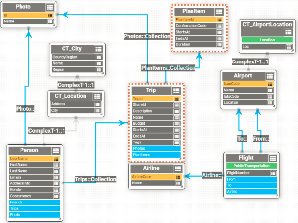
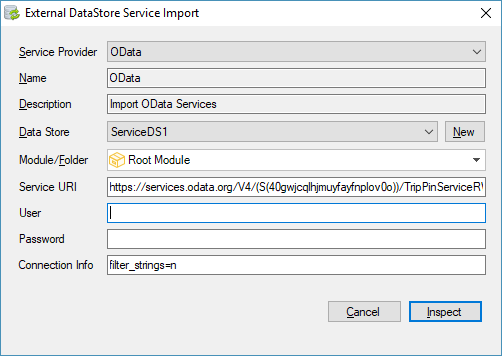
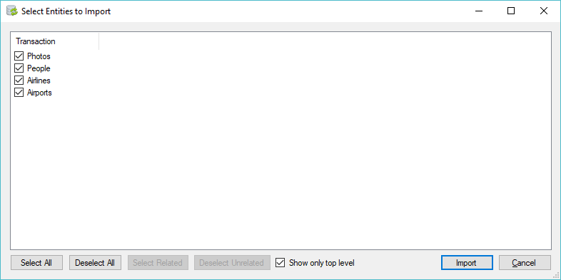

Many times we want to integrate a GeneXus application with external data sources. When this source comes from a DBMS and direct access is allowed, the DBRet can be used to integrate it into the GeneXus model. Currently, when the interface with the external source is not SQL, integration with GeneXus must be performed through procedures and/or external objects. The drawback of this solution is that it does not integrate the data source into the GeneXus model, and therefore natural language constructions (Transactions, Business Components, For Each commands, Data Selectors) cannot be used, and the use of others (Data Providers, grids, etc.) is limited or cumbersome. In this scenario, the specifier cannot generate navigations for this Datasource. To solve this, a mechanism has been added to GeneXus in order to integrate non-SQL external sources into the GeneXus model. This mechanism is extensible and allows adding new data sources. This mechanism incorporates a new type of extensible Data Store (Service). In this way, a GeneXus navigation can be calculated over this Data Store and later translated into a query to the external source. The solution consists of 3 phases (design, generation, execution time):
One of the possible data sources, in the above scenario, is an OData Service. Open Data Protocol (a.k.a OData) is a data access protocol designed to provide standard CRUD access to a data source via a website. "Open Data Protocol (OData) is a standardized protocol for creating and consuming data APIs. OData builds on core protocols like HTTP and commonly accepted methodologies like REST. The result is a uniform way to expose full-featured data APIs." Source: Odata Home page. Technology usedThe GeneXus implementation is based on version 4 of the protocol (OData Version Documentation), and even though services implemented in previous versions are supported, there is no guarantee that there won't be any problems. How to Consume OData ServicesLet's see this feature with an example. Suppose you want to integrate the OData TripPin model into your Knowledge Base. OData model of the example (TripPin)  It consists of 4 main entities:
The other entities cannot be the "base entity" of a query; that is to say, for example, I cannot access a Trip directly and I should do it through a Person instead. The model is quite complete in that it uses a lot of OData v4 features, some of which are not directly mapped to the GeneXus model:
Importing the model from GeneXusTo import the model, select Tools / Application Integration / External Data Store Service Import. Since the import will create attributes with long names, increasing the value of Significant Attribute Name Length in the version's properties is convenient. A screen like the following will be displayed:  There, select "OData" as a Service Provider and select a Data Store of Service type. If one doesn't exist, you can create it right there using the New button. Next, add:
When inspecting the service, a new dialog appears to choose which entities to import:  By default, this dialog only shows transactions associated with main entities. In this case, the Import process will import all the additional transactions required to work with the selected main entities. If you want to specifically import part of the model, you can deselect "Show only top level" and manually select the transactions you want to import (not recommended). SAP's OData ServicesSAP has widely adopted this protocol for exchanging data. Although it provides many pre-built services that can be consumed with GeneXus using this mechanism, you can also invoke Abap functions (or BAPIs) of SAP ERP, published as OData services in SAP NetWeaver Gateway. To publish a BAPI as OData service, follow this wizard. SAP NetWeaver Gateway uses "cross-site request forgery" as security method. You need to send your username and password to SAP and it sends a token similar to 'X-CSRF-Token: qyFwSG-_meLAJt-Ei7gOBA==' that you need to use in future POST/PUT/PATCH/DELETE operations. To have GeneXus do it automatically when importing the service, in the Connection info field (and/or in the property Additional connection string attributes of the Data store associated with the OData services), enter SAP=true. In case you want to consume from SAP Business One instead of ERP you have to add SapLogin=<sapLogin>, rather than SAP=true, where <sapLogin> is the CompanyDB name (Temporary only available on for C#)
Restrictions
AvailabilityThis feature is available as of GeneXus 16.
|
| Backlinks |
| GeneXus 17 upgrade 2 |
| GeneXus for SAP Systems 17 Release Notes |